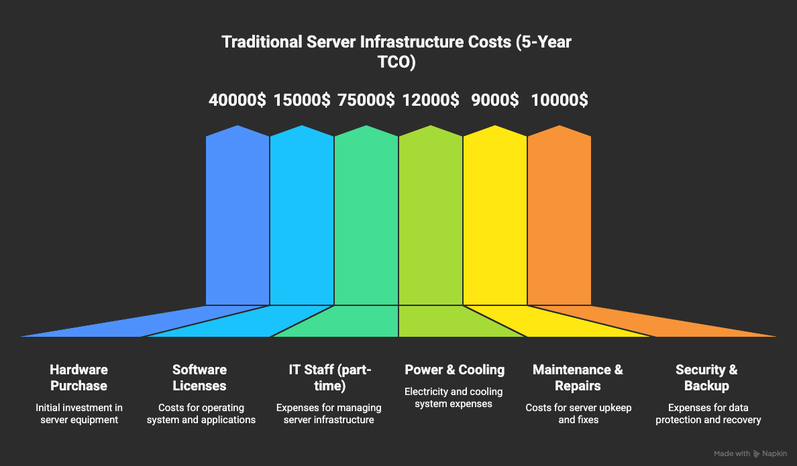
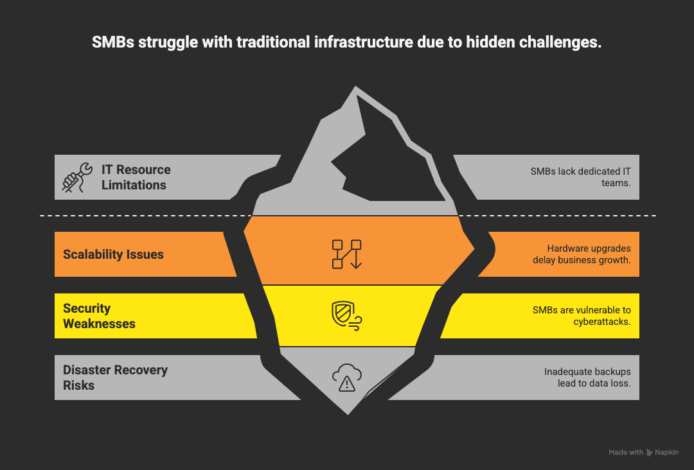
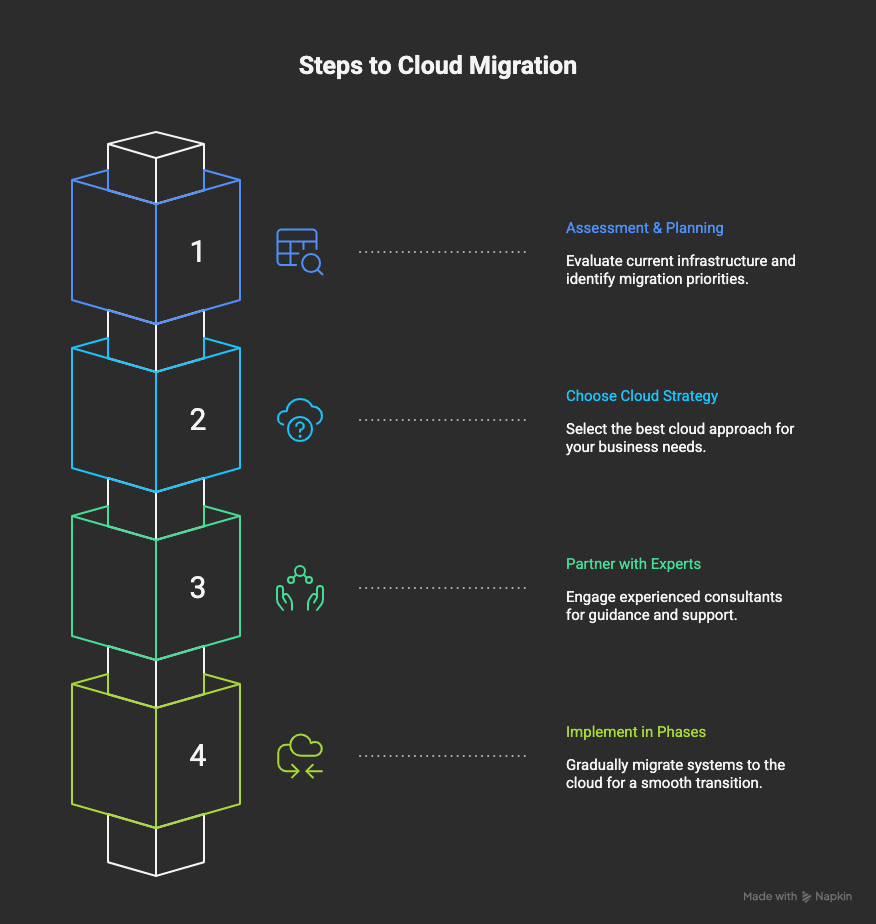

The Hidden Costs of Traditional Server Infrastructure: Why SMBs Are Migrating to Cloud
Key Takeaway
Small and medium businesses are saving 40-60% on IT costs by migrating from traditional server infrastructure to cloud solutions, while gaining improved scalability, security, and operational efficiency.
In today's rapidly evolving digital landscape, small and medium businesses (SMBs) face a critical decision: continue investing in traditional server infrastructure or embrace the cloud revolution. While the upfront costs of cloud migration might seem daunting, the hidden costs of maintaining on-premise servers are often far more significant than most business owners realize.
The True Cost of Traditional Server Infrastructure
When most SMBs think about server costs, they focus on the initial hardware purchase. However, this represents only about 20% of the total cost of ownership (TCO) over a server's lifetime. Let's break down the real costs:
Traditional Server Infrastructure Costs (5-year TCO)
| Cost Category | Annual Cost | 5-Year Total |
|---|---|---|
| Hardware Purchase | $8,000 | $40,000 |
| Software Licenses | $3,000 | $15,000 |
| IT Staff (part-time) | $15,000 | $75,000 |
| Power & Cooling | $2,400 | $12,000 |
| Maintenance & Repairs | $1,800 | $9,000 |
| Security & Backup | $2,000 | $10,000 |
| Total | $32,200 | $161,000 |
Why SMBs Are Struggling with Traditional Infrastructure
1. Limited IT Resources
Most SMBs don't have dedicated IT teams, forcing business owners or office managers to handle server maintenance, updates, and troubleshooting. This diverts valuable time from core business activities and often leads to suboptimal IT management.
2. Scalability Challenges
Traditional servers require significant upfront investment and planning. When your business grows, you need to purchase additional hardware, which can take weeks or months to implement. This creates bottlenecks that can hinder business growth.
3. Security Vulnerabilities
On-premise servers require constant security updates and monitoring. Many SMBs lack the expertise to implement proper security measures, making them vulnerable to cyberattacks, data breaches, and ransomware.
4. Disaster Recovery Risks
Traditional backup solutions are often inadequate or not properly tested. In the event of hardware failure, natural disaster, or cyberattack, SMBs can lose critical data and face extended downtime.
The Cloud Migration Advantage
Cloud migration offers SMBs a path to modern, scalable, and cost-effective IT infrastructure. Here's how cloud solutions address the challenges of traditional infrastructure:
Cost Savings: 40-60% Reduction in IT Costs
Cloud solutions eliminate the need for expensive hardware purchases, reduce power and cooling costs, and minimize IT staffing requirements. Most importantly, cloud services operate on a pay-as-you-go model, allowing businesses to scale resources up or down based on actual needs.
Improved Scalability
Cloud infrastructure can scale instantly to accommodate business growth or seasonal fluctuations. This flexibility allows SMBs to respond quickly to market opportunities without the delays associated with traditional infrastructure upgrades.
Enhanced Security
Cloud providers invest heavily in security infrastructure, offering enterprise-grade protection that most SMBs couldn't afford to implement on their own. This includes advanced threat detection, automated security updates, and comprehensive backup solutions.
Better Disaster Recovery
Cloud-based disaster recovery solutions provide faster recovery times and more reliable backup systems. Data is automatically replicated across multiple locations, ensuring business continuity even in the event of a major disaster.
Real-World Success Stories
Case Study: Manufacturing Company Saves $45,000 Annually
A mid-sized manufacturing company with 50 employees was spending $75,000 annually on traditional server infrastructure. After migrating to cloud solutions, their IT costs dropped to $30,000 per year, representing a 60% cost reduction. Additionally, they gained improved system reliability and the ability to access critical applications from anywhere.
Case Study: Retail Chain Improves Customer Experience
A retail chain with 15 locations struggled with slow point-of-sale systems and inventory management issues. Cloud migration enabled them to centralize their operations, improve system performance, and provide real-time inventory tracking across all locations. This resulted in a 25% improvement in customer satisfaction scores.
Getting Started with Cloud Migration
If you're considering cloud migration for your SMB, here's a structured approach to get started:
Step 1: Assessment and Planning
Begin with a comprehensive assessment of your current infrastructure, applications, and business requirements. Identify which workloads are suitable for cloud migration and prioritize them based on business impact and migration complexity.
Step 2: Choose the Right Cloud Strategy
Consider whether a public cloud, private cloud, or hybrid approach best suits your business needs. For most SMBs, public cloud solutions offer the best balance of cost, scalability, and ease of management.
Step 3: Partner with Experts
Cloud migration requires specialized expertise. Partner with experienced cloud consultants who can guide you through the process, ensure proper implementation, and provide ongoing support.
Step 4: Implement in Phases
Rather than attempting a complete migration at once, implement cloud solutions in phases. Start with non-critical applications and gradually migrate more important systems as you gain confidence and experience.
Conclusion
The hidden costs of traditional server infrastructure are driving more SMBs to embrace cloud solutions. With 40-60% cost savings, improved scalability, enhanced security, and better disaster recovery capabilities, cloud migration represents a strategic investment in your business's future.
At KloudEdge.cloud, we specialize in helping SMBs navigate the cloud migration journey. Our team of experts can assess your current infrastructure, develop a customized migration plan, and ensure a smooth transition to cloud solutions that drive real business value.
Ready to explore how cloud migration can transform your business? Contact us today for a free consultation and cost analysis.